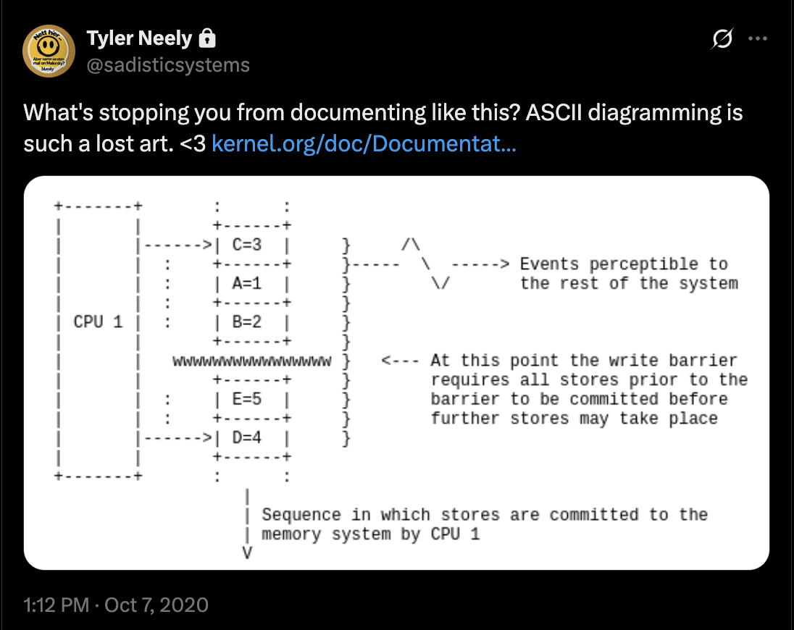

Review of "Clean Code" Second Edition
This is true! Clean Code’s second edition is pretty much the same: same tiny-functions style, the same old OOP habit of mixing data and behavior into choppy class designs, and the same blind spots.
I wrote a critique of Clean Code's first edition and was curious how much of it would become obsolete. After reading it, the answer is: "not much, if anything"
It is a different book in some ways:
- The first edition was focused, concise and highly opinionated. You could disagree with 80% of it and still appreciate it as a clear, coherent message about one particular style of programming.
- The second edition is less focused. It’s an amalgamation of Martin’s work - a collage of Clean Code, The Clean Coder, Clean Architecture, We Programmers, and SOLID material.
It’s also a noticeably thicker book - full of digressions, rants, and good old rambling.
But the code part has not really changed. This review focuses on "Part 1: Code".
...
Here's a good example of the new format:
In Chapter 10 - "One Thing" - he addresses critiques of his style of tiny functions:
-
People are afraid that if they follow this rule, they will drown beneath a sea of tiny little functions.
-
People are afraid that following this rule will obscure the intent of a function because they won't be able to see it all in one place.
-
People worry that the performance penalty of calling all those tiny little functions will cause their applications to run like molasses in the wintertime.
-
People think they're going to have to be bouncing around, from function to function, in order to understand anything.
-
People are concerned that the resulting functions will be too entangled to understand in isolation.
Let's address these one at a time.
- Drowning
Long ago our languages were very primitive. The first version of Fortran, for example, allowed you to write one function. And it wasn't called a function. It was just called a program. There were no modules, no functions, and no subroutines. As I said, it was primitive.
COBOL wasn't much better. You could jump around from one paragraph to the next using a goto statement; but the idea of functions that you could call with arguments was still a decade in the future.
When Algol, and later, C, came along, the idea of functions burst upon us like a wave. Suddenly we could create modules that could be individually compiled. Modular programming became all the rage.
But as the years went by, and our programs got larger and larger, we began to realize that functions weren't enough. Our names started to collide. We were having trouble keeping them unique. And we really didn't like the idea of prefixing every name with the name of its module. I mean, nobody likes io_files_open as a function name.
So we added classes and namespaces to our languages. These gave us lovely little cubbyholes that had names into which we could place our functions and our variables. Moreover, these namespaces and classes quickly became hierarchical. We could have functions within namespaces that were within yet other namespaces.
He keeps going, but you can see that:
- Points 1, 2, and 4 are essentially the same concern.
- Folksy phrasing like “run like molasses in the wintertime” doesn’t clarify anything.
- Instead of addressing the core critique, he detours into a thin language-history lesson.
This is the style of the second edition.
What has somewhat improved is the Java code: most examples in the first edition were abysmally bad, and while the second edition is better, it still leaves much to be desired.
The second edition has examples in other languages. But Martin writes Python and Go as if they were Java with disclaimers that he doesn’t really know them:
- "It’s been a long time since I’ve written any Python, so bear with me."
- "I apologize - I am not an accomplished Golang programmer"
Why does he use them? I guess to prove that the ideas aren’t Java-specific and apply across languages. And they might be - if you write Java in Python. Do they apply if you write Python in Python? That’s left as an exercise for the reader.
Over the years Martin has definitely heard the critique of his original book, and he has participated in debates around it (with Casey Muratori about performance, and with John Ousterhout about style and design).
I don't believe Martin internalized the critique or revised any of his recommendations.
There is a tonal shift here and there towards being more accepting of alternative views ("but you may disagree. That's OK. We are allowed to disagree. There is no single standard for what cleanliness is. This is mine, and mine may not be yours."), but I haven't noticed any changes in the way he writes code.
Chapter 2 - Clean that code!
This chapter is a replacement for "Chapter 14: Successive Refinement" from the first edition.
This is a good illustration that it's the same "Clean Code"(tm) style from 2007 - nothing has really changed.
As a reminder:
- Avoid comments. Over-use "description as a name" instead
- Extract a lot of tiny functions that are used only once
- Move parameters to class state and pass them implicitly from everywhere to everywhere
This is how he cleans the code in 2024: Original version on the left; the cleaned-up version on the right:
package fromRoman;
import java.util.Arrays;
public class FromRoman {
public static int convert(String roman) {
if (roman.contains("VIV") ||
roman.contains("IVI") ||
roman.contains("IXI") ||
roman.contains("LXL") ||
roman.contains("XLX") ||
roman.contains("XCX") ||
roman.contains("DCD") ||
roman.contains("CDC") ||
roman.contains("MCM")) {
throw new InvalidRomanNumeralException(roman);
}
roman = roman.replace("IV", "4");
roman = roman.replace("IX", "9");
roman = roman.replace("XL", "F");
roman = roman.replace("XC", "N");
roman = roman.replace("CD", "G");
roman = roman.replace("CM", "O");
if (roman.contains("IIII") ||
roman.contains("VV") ||
roman.contains("XXXX") ||
roman.contains("LL") ||
roman.contains("CCCC") ||
roman.contains("DD") ||
roman.contains("MMMM")) {
throw new InvalidRomanNumeralException(roman);
}
int[] numbers = new int[roman.length()];
int i = 0;
for (char digit : roman.toCharArray()) {
switch (digit) {
case 'I' -> numbers[i] = 1;
case 'V' -> numbers[i] = 5;
case 'X' -> numbers[i] = 10;
case 'L' -> numbers[i] = 50;
case 'C' -> numbers[i] = 100;
case 'D' -> numbers[i] = 500;
case 'M' -> numbers[i] = 1000;
case '4' -> numbers[i] = 4;
case '9' -> numbers[i] = 9;
case 'F' -> numbers[i] = 40;
case 'N' -> numbers[i] = 90;
case 'G' -> numbers[i] = 400;
case 'O' -> numbers[i] = 900;
default -> throw new InvalidRomanNumeralException(roman);
}
i++;
}
int lastDigit = 1000;
for (int number : numbers) {
if (number > lastDigit) {
throw new InvalidRomanNumeralException(roman);
}
lastDigit = number;
}
return Arrays.stream(numbers).sum();
}
public static
class InvalidRomanNumeralException extends RuntimeException {
public InvalidRomanNumeralException(String roman) {
}
}
}
package fromRoman;
import java.util.ArrayList;
import java.util.List;
import java.util.Map;
public class FromRoman {
►private String roman;
private List<Integer> numbers = new ArrayList<>();
private int charIx;
private char nextChar;
private Integer nextValue;
private Integer value;
private int nchars;this is unfortunate mix of input data, intermediate computation state, and output data
What's surprising is that Martin wants method bodies to be clean, but doesn't mind mess in object's state or class namespace
►Map<Character, Integer> values = Map.of(this should be a constant, i.e. "static private final"
'I', 1,
'V', 5,
'X', 10,
'L', 50,
'C', 100,
'D', 500,
'M', 1000);
►public FromRoman(String roman) {this should be private, if we want `convert` to be an entry point
this.roman = roman;
}
public static int convert(String roman) {
return new FromRoman(roman).doConversion();
}
private int doConversion() {
checkInitialSyntax();
convertLettersToNumbers();
checkNumbersInDecreasingOrder();
return numbers.stream().reduce(0, Integer::sum);
}
private void checkInitialSyntax() {
checkForIllegalPrefixCombinations();
checkForImproperRepetitions();
}
private void checkForIllegalPrefixCombinations() {
►checkForIllegalPatterns(
new String[]{"VIV", "IVI", "IXI", "IXV", "LXL", "XLX",
"XCX", "XCL", "DCD", "CDC", "CMC", "CMD"});useless allocations. these should be extracted into constants
}
►private void checkForImproperRepetitions() {there is no need to split validation in 3 methods. this just pollutes name space
►checkForIllegalPatterns(
new String[]{"IIII", "VV", "XXXX", "LL", "CCCC", "DD", "MMMM"});useless allocations. these should be extracted into constants
}
private void checkForIllegalPatterns(String[] patterns) {
for (String badString : patterns)
if (roman.contains(badString))
throw new InvalidRomanNumeralException(roman);
}
private void convertLettersToNumbers() {
char[] chars = roman.toCharArray();
nchars = chars.length;
for (charIx = 0; charIx < nchars; charIx++) {
nextChar = isLastChar() ? 0 : chars[charIx + 1];
nextValue = values.get(nextChar);
char thisChar = chars[charIx];
value = values.get(thisChar);
switch (thisChar) {
case 'I' -> addValueConsideringPrefix('V', 'X');
case 'X' -> addValueConsideringPrefix('L', 'C');
case 'C' -> addValueConsideringPrefix('D', 'M');
case 'V', 'L', 'D', 'M' -> numbers.add(value);
default -> throw new InvalidRomanNumeralException(roman);
}
}
}
private boolean isLastChar() {
return charIx + 1 == nchars;
}
private void addValueConsideringPrefix(char p1, char p2) {
if (nextChar == p1 || nextChar == p2) {
numbers.add(nextValue - value);
charIx++;
} else numbers.add(value);
}
private void checkNumbersInDecreasingOrder() {
for (int i = 0; i < numbers.size() - 1; i++)
if (numbers.get(i) < numbers.get(i + 1))
throw new InvalidRomanNumeralException(roman);
}
public static
class InvalidRomanNumeralException extends RuntimeException {
public InvalidRomanNumeralException(String roman) {
super("Invalid Roman numeral: " + roman);
}
}
}
Let's be clear: this is a stylistic choice. It doesn't improve any objective metric.
As a style, it's very recognizable: when you see long-named functions that have 0-1 parameters and very short bodies - you immediately think "Oh. That's Uncle Bob's Clean Code".
From an artistic standpoint, creating a distinctive, instantly recognizable style is an achievement. I bet you know a colleague or two who uses it.
But code isn't art. The question is whether the style helps you build and maintain software.
Putting the style aside for a moment, you'll notice that the "improved" code is surprisingly sloppy:
- Confusing public API: class
FromRomanhas a single public entry point - static methodconvert, this means the constructor should be private.
If we are aiming for code to be new-reader friendly, the proper implementation would be:
// internal constructor. use static method 'convert' instead
private FromRoman(String roman) {
this.roman = roman;
}
- Unnecessary allocations: The immutable values (
Map<Character, Integer> values) have to be "private static final" to avoid creating the same reference data every time you do a conversion. The validation patterns are allocated on each call too.
Here's how it should be done instead:
private static final String[] INVALID_PATTERNS = {
// Illegal prefix combinations
"VIV", "IVI", "IXI", "IXV", "LXL", "XLX",
"XCX", "XCL", "DCD", "CDC", "CMC", "CMD",
// Improper repetitions
"IIII", "VV", "XXXX", "LL", "CCCC", "DD", "MMMM"
};
private static void validate(String roman) {
for (String pattern : INVALID_PATTERNS) {
if (roman.contains(pattern)) {
throw new InvalidRomanNumeralException(roman);
}
}
}
This eliminates the useless allocations and removes the pointless checkForIllegalPrefixCombinations, checkForImproperRepetitions, and checkForIllegalPatterns helpers.
- It's a smaller code chunk that does exactly the same
- This code is less work for the compiler to compile
- It will perform better at runtime
- It would generate less garbage and have less memory pressure
All for free, just from using a different style.
And let's talk style. Arguably private static void validate(String roman) is an easy-to-understand signature. You don't need to
jump across the code to guess what it is doing. And the implementation utilizes different language constructs to express the intent:
- Inputs for the processing - as method arguments
- Static immutable reference data - as constants
- Code explanation - as comments
In contrast, Clean Code advocates using method names for code explanation and class fields for passing parameters and results. This feels like a misuse of the instrument.
Now try to work out the purpose and relationships between these methods from signatures only:
private void checkForIllegalPrefixCombinations()private void checkInitialSyntax()private void checkForIllegalPatterns(String[] patterns)private void checkForImproperRepetitions()
Fun!
P.S. Sometimes it's worth encoding documentation into the name to make things more visible (for example, runTaskDangerouslySkipPermissions),
but this should not be a go-to move. This is a special case situation that requires justification.
...
This is the moment that made me chuckle:
YES! Everyone finds this annoying! Lean into this feeling! See the light, Robert! It's not too late.
But then he falls into justifications:
This annoyance is an issue that John Ousterhout and I have debated. When you understand an algorithm, the artifacts intended to help you understand it become annoying. Worse, if you understand an algorithm, the names or comments you write to help others will be biased by that understanding and may not help the reader as much as you think they will
He is mixing two points here:
- Stroustrup's rule - beginners want as much context as possible, experts want code to be terse and on-point
- You might be bad at explaining your ideas in code
Comments solve both problems: experts can skip them, beginners can rely on them. Bad comments are less risky than bad code - if you're bad at explaining your code in comments, people can ignore them. If you're bad at explaining your thoughts in code, everyone is stuck with it.
He casually pushes comments under the bus: "the names or comments you write to help others will be biased by that understanding and may not help the reader as much as you think they will". But his code had none so far.
This section was supposed to address the main critique from John Ousterhout: code style and design.
Then he moves to performance (Casey Muratori is not mentioned once in the book, which is a shame):
It might sound repetitive, but the trade-off comes not from cleanliness or clarity, it comes specifically from his style:
- Function extraction to keep them small (and to avoid comments)
- Moving parameters to object fields to minimize the number of parameters (to 1 or 0)
He understates the negative impact:
- Compile time: more small functions and many fields forces the compiler to do more work
- Runtime: all these object fields require additional memory space for references
- Testing: in Java, for non-JITed code, passing data via instance fields is more expensive than using method parameters. Slow non-JITed code means slow tests.
If you don't agree that this style improves clarity (and you shouldn't - be like John Ousterhout), you get a double slap: less readable code that also has worse performance. This is what makes people so energized against "clean code"™.
"Well, actually" the function that can throw an exception is not pure. A pure function must be deterministic and have no side effects. Throwing an exception is a side effect-it alters the control flow and can be observed from outside the function.
"allowing the individual methods to communicate without having to resort to passing arguments" - this is such strange wording.
Passing arguments and returning values is THE main mechanism for how functions communicate. There is no resorting here.
Tangent: Pure functions.
There is a whole section in Chapter 7: Clean Functions dedicated to Robert Martin refusing to embrace the concept of pure functions.
Purity is an observed quality, not an intrinsic quality. Therefore, whether a function is pure or not depends upon what is being observed.
Consider the C library function fopen(char* name, char* mode) This function has the side effect of leaving the named file open.
This means that fopen is not pure, because there are functions, such as fgetc and fputc, that will not behave properly unless
fopen is called first. Indeed, if you call fopen with the same arguments twice in a row without an intervening call to fclose,
the second invocation will likely fail because the file is already open. So fopen is not pure, because of the side effect that
leaves the system in an altered state.
However, we can make the fopen function appear to be pure, at least to certain observers, by ensconcing it in another function that hides the side effect.
void openAndDo(char* fileName, void (*doTo)(FILE*)) {
FILE* f = fopen(fileName, "r+");
doTo(f);
fclose(f);
}
I believe he is trying to address criticism of his misunderstanding of pure functions and side effects by doubling down on that misunderstanding.
Indeed, if you call fopen with the same arguments twice in a row without an intervening call to fclose, the second invocation will likely fail because the file is already open
On some operating systems it will fail, but on others it won’t. Instead, you may just leak file descriptors. The side effect of fopen is more complex than “leaves the file open”:
- It mutates global system state.
- It depends on external system resources being available.
- It might fail based on external conditions.
In other words, it has an implicit dependency on the environment.
at least to certain observers
For any observer:
fopencan fail,doTocan fail, andfclosecan fail. Any of these may leave the system in a different state.fopenandfcloseboth depend on the environment: the file must exist, the filesystem must be available, there must be free file descriptors, etc.
The whole point of pure functions is that they depend only on their input parameters and always produce the same result for the same input. This makes them:
- Context-independent – they can be used anywhere you have the required input data, and they compose well with other parts of the system.
- Easier to reason about – you only need to think about the function’s implementation, not hidden global or environmental state.
- Easier to optimize – they are suitable for memoization/caching and compiler optimizations
I suspect this section exists mostly to defend his “0–1 parameters” style. But again, instead of clarifying important concepts (purity and side effects), Martin blurs them just enough to justify his preferred way of writing code.
This reframing of purity as an “observed quality” in a programming book in 2025 looks off.
In isolation this is an A-OK caveat. It makes the book feel less dogmatic and given how controversial it is - that's a good tone shift. But the question is: who is Robert Martin speaking to? Junior people would just ignore this paragraph, they are looking for straight and simple guidance. Putting disclaimers like this doesn't negate the harmful influence. For senior people who are just upset with "clean code"(tm) style this is an empty platitude. Everyone who disagrees with "clean code"(tm) style knows that they are allowed to disagree. That's not the point of the criticism.
I fed my "clean" version of the above code into Grok3 and asked it to make improvements. After a bit of thought, it returned the following code, which compiled and which passed all my tests.
package fromRoman;
import java.util.Map;
public class FromRoman {
private String roman;
private static final String REGEX =
"^M{0,3}(CM|CD|D?C{0,3})(XC|XL|L?X{0,3})(IX|IV|V?I{0,3})$";
private static final Map<Character, Integer> VALUES = Map.of(
'I', 1,
'V', 5,
'X', 10,
'L', 50,
'C', 100,
'D', 500,
'M', 1000
);
/** Constructs a FromRoman instance,
validating the input Roman numeral. */
public FromRoman(String roman) {
if (!roman.matches(REGEX)) {
throw new InvalidRomanNumeralException(roman);
}
this.roman = roman;
}
/** Converts the Roman numeral to an integer. */
public int toInt() {
int sum = 0;
for (int i = 0; i < roman.length(); i++) {
int currentValue = VALUES.get(roman.charAt(i));
if (i < roman.length() - 1) {
int nextValue = VALUES.get(roman.charAt(i + 1));
if (currentValue < nextValue) {
sum -= currentValue;
} else {
sum += currentValue;
}
} else {
sum += currentValue;
}
}
return sum;
}
/** Static method to convert a Roman numeral string to an integer. */
public static int convert(String roman) {
return new FromRoman(roman).toInt();
}
public static
class InvalidRomanNumeralException extends RuntimeException {
public InvalidRomanNumeralException(String roman) {
super("Invalid Roman numeral: " + roman);
}
}
}
Grok3 did a nice job
This is such a canonical solution to the Roman numeral problem that Grok almost certainly got it from the training data.
But what's interesting here is how you can bias an AI model to write suboptimal code.
Notice that Grok's solution retains the instance variable roman which is completely unnecessary.
It is a bias from his "clean" version.
If you just ask a model to create a brand new converter from "roman numerals to int in java" it would come up with a reasonable API:
public final class RomanNumerals {
public static int toInt(String roman) {...}
}
Chapter 3: First principles
Chapter 3 is supposed to demonstrate how SOLID gives you designs that scale with new requirements. What it actually demonstrates is how you can get a complex code design that completely ignores the complexity of the domain.
The starting point is a simple rental statement for a conference center.
---Statement.java---
package ubConferenceCenter;
import java.util.ArrayList;
import java.util.List;
public class Statement {
public enum CatalogItem {SMALL_ROOM, LARGE_ROOM,
PROJECTOR, COFFEE, COOKIES}
public record RentalItem(CatalogItem type,
int days,
int unitPrice,
int price,
int tax) {
}
public record Totals(int subtotal, int tax) {
}
private String customerName;
private int subtotal = 0;
private int tax = 0;
private List<RentalItem> items = new ArrayList<>();
public Statement(String customerName) {
this.customerName = customerName;
}
public void rent(CatalogItem item, int days) {
int unitPrice = switch (item) {
case SMALL_ROOM -> 100;
case LARGE_ROOM -> 150;
case PROJECTOR -> 50;
case COFFEE -> 10;
case COOKIES -> 15;
};
boolean eligibleForDiscount = switch (item) {
case SMALL_ROOM, LARGE_ROOM -> days == 5;
case PROJECTOR, COFFEE, COOKIES-> false;
};
int price = unitPrice * days;
if (eligibleForDiscount) price = (int) Math.round(price * .9);
subtotal += price;
int thisTax = switch (item) {
case SMALL_ROOM, LARGE_ROOM, PROJECTOR ->
(int) Math.round(price * .05);
case COFFEE,COOKIES -> 0;
};
tax += thisTax;
items.add(new RentalItem(item, days, unitPrice, price, thisTax));
}
public RentalItem[] getItems() {
List<RentalItem> items = new ArrayList<>(this.items);
boolean largeRoomFiveDays = items.stream().anyMatch(
item -> item.type() == CatalogItem.LARGE_ROOM && item.days() == 5);
boolean coffeeFiveDays = items.stream().anyMatch(
item -> item.type() == CatalogItem.COFFEE && item.days() == 5);
if (largeRoomFiveDays && coffeeFiveDays)
items.add(new RentalItem(CatalogItem.COOKIES, 5, 0, 0, 0));
return items.toArray(new RentalItem[0]);
}
public String getCustomerName() {
return customerName;
}
public Totals getTotals() {
return new Totals(subtotal, tax);
}
}
To address the requirements changes:
The proposed rewrite is as follows:
Applying different letters from SOLID, Martin claims that SOLID helps design code for growth and scaling:
I can agree with extraction of Bonus subsystem. But why stop at Bonuses? What about taxes and discounts and pricing?
(side note: void checkAndAdd(List<RentalItem> items, List<RentalItem> bonusItems) is surprisingly awkward API)
The whole redesign is mostly an attempt to replace switch statements with polymorphism. But is CatalogItem actually a good interface?
public interface CatalogItem {
boolean isEligibleForDiscount(int days);
int getDiscountedPrice(int days);
int getUnitPrice();
double getTaxRate();
String getName();
}
This is old-school OOP: one interface that pretends to encapsulate “an item” but quietly bundles pricing, tax, and discount policy into a single interface.
And yet it is very simplistic.
Everyone who has dealt with taxes can immediately understand how laughable this simplification is:
double getTaxRate();
- There's rarely just one tax
- Taxes depend on the category of item
- Tax depends on where and who
- Tax rules change over time
- double wouldn't cut it for rounding and precision, some taxes are not even percentages.
The requirement changes that this design wouldn't be able to accommodate:
- Actual taxation system
- Changes over time
For example, Martin's interface makes a fundamental domain modeling error: it treats tax as an intrinsic property of items.
Say we're expanding state tax rules: New York charges 8.875% on room rentals but 0% on food. California charges 7.25% on both. With Martin's design, where does this logic go?
class LargeRoom implements CatalogItem {
double getTaxRate() {
// How do I know we're in NY vs CA?
// Do I inject location into every item?
}
}
I don't believe this design is ready for "new markets, new states, new laws to contend with."
This is one of the problems with SOLID in general: it's a collection of principles that you can apply mechanistically to any codebase, completely ignoring the domain of the application.
This idea of separating high-level policy from low-level detail might be useful, but it is misapplied. The real world of taxation doesn't work by each newly produced item (low-level) deciding its own tax rate. And yes, tax code (high level) has to change to accommodate new categories when they are being introduced.
This is where domain-driven design provides better guidance: instead of mechanically applying structural principles, start by understanding what you're building.
- Figure out the goal of the application
- Figure out main domain areas
- Figure out main domain entities
- Figure out processing workflows
It is easier to organize growing space, by abandoning old OOP-style of mixing data and processing in one interface.
For this rental system, the processing flow is straightforward:
[order] -> <discounts> -> <promotions> -> <pricing> -> <taxation> -> [receipt]
And the sketch would look like this:
// data
record RoomRental(RoomType type, int days) {}
record EquipmentRental(EquipmentType type, int days) {}
record ConsumableOrder(ConsumableType type, int days) {}
class Order {
private List<RoomRental> rooms = new ArrayList<>();
private List<EquipmentRental> equipment = new ArrayList<>();
private List<ConsumableOrder> consumables = new ArrayList<>();
}
record BillingDetails(
String customerName,
String billingAddress,
String taxId,
PaymentMethod paymentMethod
) {}
// processing
var pricing = new PricingEngine(discounts, taxes, promotions);
var order = new Order()
.addRoom(Rooms.LARGE, 5)
.addRoom(Rooms.SMALL, 3)
.addEquipment(Equipment.PROJECTOR, 3)
.addConsumable(Consumables.COFFEE, 5);
var billingDetails = new BillingDetails(
"Acme Corp",
"123 Business St, New York, NY 10001",
"EIN: 12-3456789",
PaymentMethod.CORPORATE_ACCOUNT
);
Receipt receipt = pricing.generateReceipt(order, billingDetails);
This is a sketch, but it clearly has space for growth into a real system: Need to add California tax rules? Add a new tax strategy. New promotion for repeat customers? Add it to the promotions engine. Etc
Applying SOLID without thinking about domain modeling, will produce architecturally wrong designs that won't work.
Chapter 5: Comments
In the revised chapter on comments, he refuses to take the blame for popularizing the idea that comments are a sign of bad code and should be avoided:
And yet even in this edition he declares comments to be a failure:
..
The proper use of comments is to compensate for our failure to express ourselves in code. Note that I used the word failure. I meant it. Comments are always failures of either our languages or our abilities.
I would generalize even more: this is a failure of our universe. If only the laws of our universe were better, we could avoid writing comments.
Both editions of this book are seriously lacking examples of good comments. The chapter about comments has a section "Good comments" and all examples are comically bad.
One of the more common motivations for writing comments is bad code. We write a module and we know it is confusing and disorganized. We know it's a mess. So we say to ourselves, "Ooh, I'd better comment that!" No! You'd better clean it!
Expressing thoughts in code is harder than expressing thoughts in plain text. Expressing thoughts in code requires:
- Clear thinking
- Mastery of the language
- Expressiveness of the language
For example, you can try very hard, but the expressiveness of the language is a noticeable limiting factor:
assertTrue(b.compareTo(a) == 1); // b < a
The best Java can offer is:
assertThat(a).isGreaterThan(b);
Serious note: if you have messy code, sit down and try to write clear comments - it will clarify your thinking and might help you reorganize the original mess.
Or another example from Chapter 7: Clean functions:
if(employee.shouldBePaidToday())
employee.pay();
In this example the employee class/interface is now coupled with unrelated concerns:
- calendars
- schedules
- payment transactions
Does this read like prose? Maybe. Is it a good interface design? No, it isn't. Some languages are just not expressive enough for you to satisfy both constraints: good code design and "reading like prose".
Overall the messaging of this chapter is the same. It's overfocused on bad examples and underfocused on good ones.
// Returns an instance of the Responder being tested.
protected abstract Responder responderInstance();
That's because the author was using the well-known Singleton design pattern. When you use a design pattern like that, you should follow the canonical form specified by that pattern. In the Singleton pattern, the name of the accessor function always ends in the word Instance.
This doesn't look like a singleton. At all.
This is how a typical singleton should look (in Java):
class Responder {
public static final Responder INSTANCE = createResponder();
}
I don't know what has happened here. But assuming that the suffix Instance means singleton is just wrong.
I've checked the source code of Fitnesse.
And I'm sorry to inform you this is not a singleton.
A couple of notes that irritate me:
/* Added by Rick */
This is just graffiti. Please don't spray-paint your name all over the source code. Source code control systems are very good at remembering who added what, when.
I'm surprised to hear this argument from an IT veteran who for sure should have seen mass migration from one version control system to another (CVS to SVN or from SVN to Git). And how often the authorship information is lost during such migrations.
Few practices are as odious as commenting-out code. Commented-out code is an abomination before nature and nature's God. Don't check this stuff in!
Others who see that commented-out code will be unlikely to have the courage to delete it. They'll think it is there for a reason and is too important to delete. So commented-out code gathers like dregs at the bottom of a bad bottle of wine
In reality, nobody is afraid to delete old commented-out code; once it’s been sitting there for a year or two, everyone assumes it’s stale. And for short-lived changes, commenting code in and out is far more practical and convenient than anything else.
I don't know where this puritan stance against comments is coming from. Comments can be fun, creative and useful:

Feel free to use and enjoy them.
...
And one last thing..
Exception handling is still a mess, even two decades later:
public void loadProperties()
{
try
{
String propertiesPath = propertiesLocation + "/" + PROPERTIES_FILE;
FileInputStream propertiesStream =
new FileInputStream(propertiesPath);
loadedProperties.load(propertiesStream);
}
catch(IOException e)
{
// No properties files means all defaults are loaded
}
}
... Wouldn't it have been better if the programmer had written the following?
catch(IOException e)
{
LoadedProperties.loadDefaults();
}
No! It wouldn't. This is very sloppy code for several reasons:
-
IOException is too broad: This exception type can occur for many reasons-file not found, permission denied, disk full, corrupted data, network issues (for network filesystems), and more.
-
Silent failures make debugging impossible: When this code fails in production, you'll have no idea why the defaults were loaded. That information is gone.
-
The fallback might not be safe: Loading defaults might be the right response to "file not found" but completely wrong for "disk full" or "permission denied." Different IOException causes should trigger different recovery strategies.
The correct approach would be something like:
catch(FileNotFoundException e) {
logger.info("Config file not found, the execution would proceed using defaults", e);
LoadedProperties.loadDefaults();
} catch(IOException e) {
throw new ConfigurationException("Unable to load configuration", e);
}
If you think that I'm nit-picking, I promise you that I'm not. Proper handling of error cases is one of the main pillars of software engineering. Just another illustration that Clean Code (the book) is obsessed with style aesthetics and underweights operational reality.
Small functions are a style, but good error handling is clean code.
Reference Materials
If you want to learn more about domain-driven design and domain modeling, here are some excellent resources:
- Domain-Driven Design: Tackling Complexity in the Heart of Software by Eric Evans - The foundational book that introduced DDD concepts
- Implementing Domain-Driven Design by Vaughn Vernon - Practical guide to applying DDD in real projects
- Domain Modeling Made Functional by Scott Wlaschin - Shows how to use functional programming with DDD (uses F#)
- Functional and Reactive Domain Modeling by Debasish Ghosh - Combines DDD with functional programming
For performance critique of Clean Code style:
- "Clean" Code, Horrible Performance by Casey Muratori - Demonstrates the performance cost of Clean Code patterns